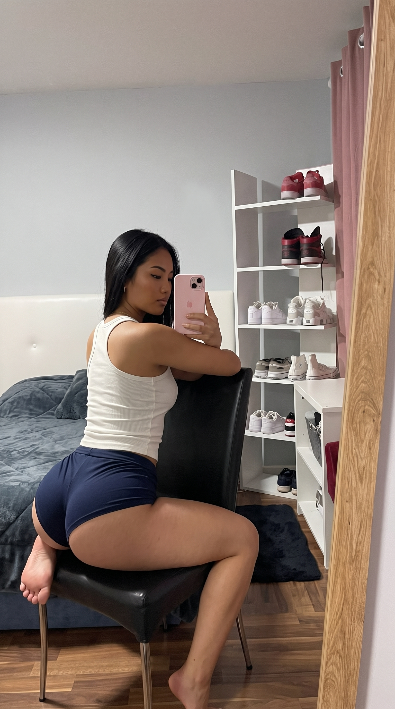

Universo Exclusivo
MAYA
“Você está prestes a cruzar a linha do proibido.”
Feito para quem quer ver tudo sem censura. Prévias grátis, grupo VIP e aulas explícitas na prática.
Carregando experiência +18
“Você está prestes a cruzar a linha do proibido.”
Feito para quem quer ver tudo sem censura. Prévias grátis, grupo VIP e aulas explícitas na prática.
Uma pequena amostra do que você encontra no VIP completo.

Entre no meu canal aberto no Telegram. Lá você não paga nada e vê:
Onde tudo é liberado. O conteúdo mais íntimo, pesado e completo da Maya:
Me conte exatamente o que você quer melhorar, aprender ou dominar na cama. Faça seu teste rápido e descubra o plano prático ideal para o seu caso.
Diagnóstico individual com base nas pesquisas acadêmicas e testes práticos da Maya.
Aperte o play e ouça a minha voz falando sobre o que te espera no VIP e nos estudos práticos.
Mensagens enviadas diretamente no privado por quem já acessou os materiais da Maya.
Aparece com um nome genérico e 100% discreto da processadora de pagamentos. Não há nenhuma menção a termos adultos, +18 ou ao nome Maya.
A liberação é imediata e automática. Assim que confirmado, o bot no Telegram entrega o seu link de acesso exclusivo e direto.
Sim! Tanto o grupo VIP quanto os estudos de sexologia são 100% explícitos, gravados em alta resolução e demonstrados na prática.
Não. O processo é totalmente anônimo e protegido com criptografia de ponta a ponta.
Conteúdo completo sem cortes no grupo VIP
Mapeando pontos de travamento e potencial de desempenho...
Com base nas suas respostas, a Maya selecionou todo o acervo de aulas e práticas explícitas necessárias para você destravar 100% na cama.
Acesso imediato, sigiloso e sem menção de conteúdo adulto na fatura.